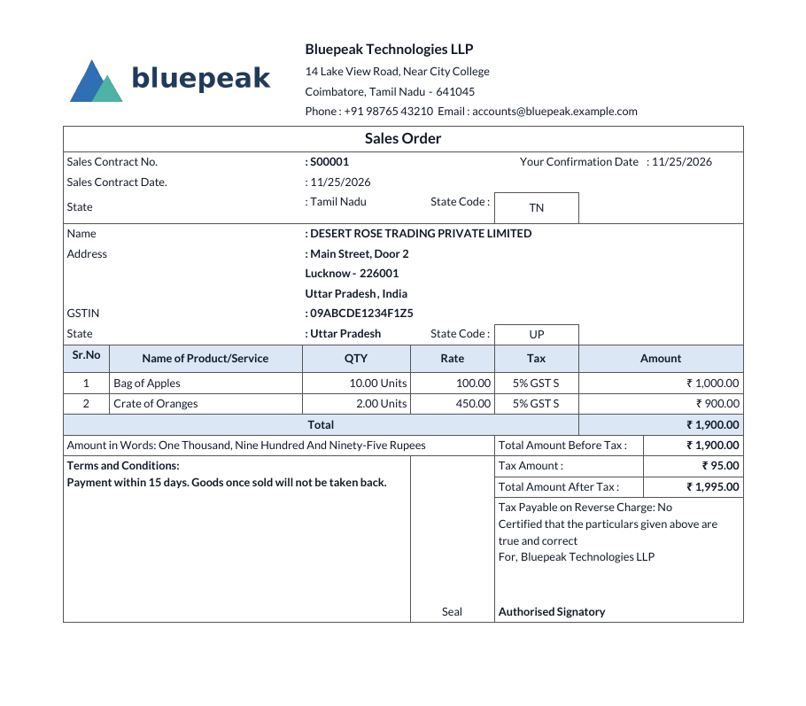
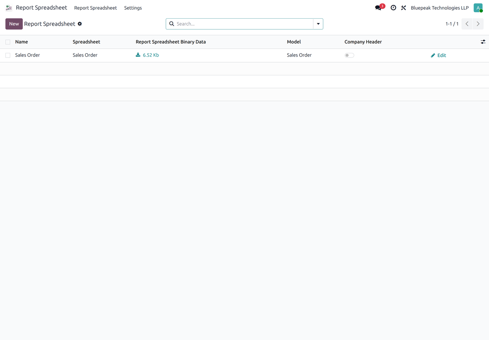
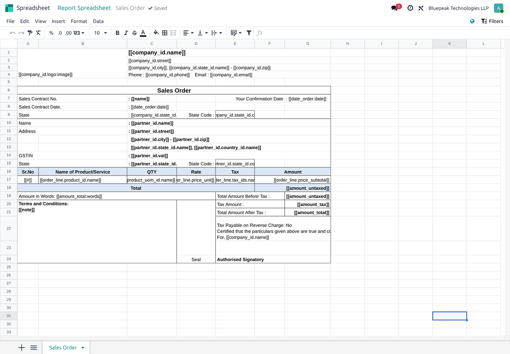
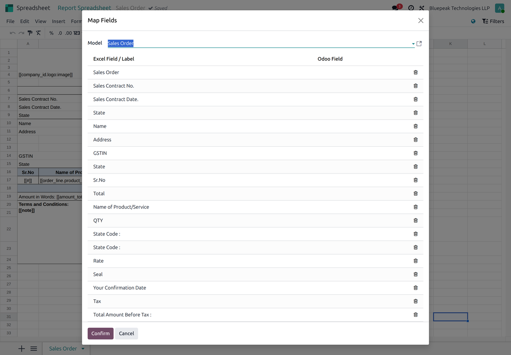
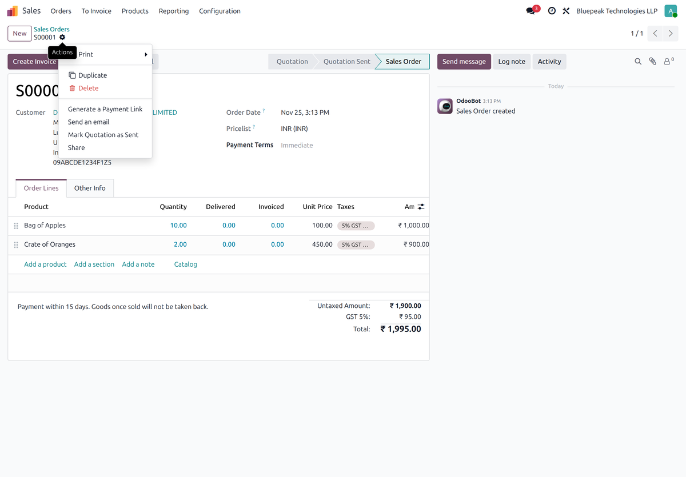
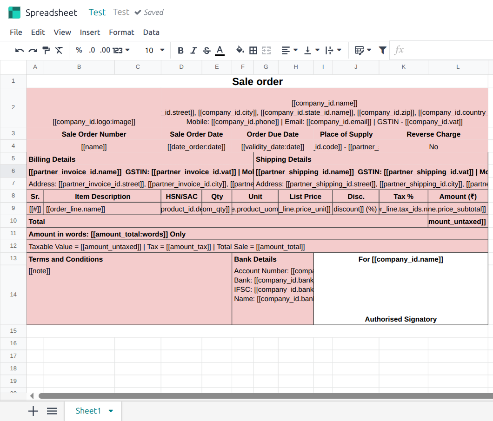
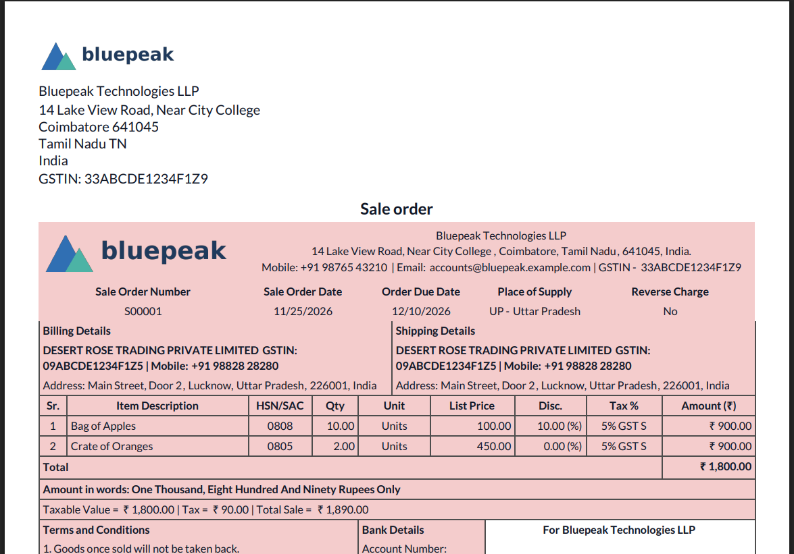
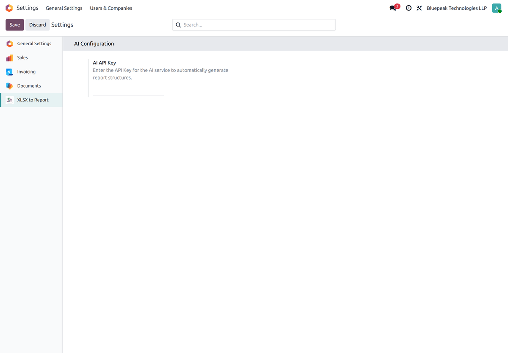

Draw any printable document in an Odoo spreadsheet - borders, merged cells, colours, item tables and totals - and print it as a PDF from the record. No QWeb, no XML, no module upgrade.
Sales orders, invoices, delivery slips, certificates, customer cards: if you can lay it out in a grid, you can print it.

From an empty sheet to a printed document in four steps.




Once a report is built, every edit in its spreadsheet is applied to the report a moment later - a new fill colour, a border, a moved column, an extra placeholder. No Map Data, no Confirm, no upgrade: the next Print already shows it. If an edit cannot be printed, such as a misspelt field, the report keeps its last good version and you get a warning.


Switching Company Header on or off in the report list rebuilds the report straight away too.
| Type in a cell | Prints |
| [[name]] | A field of the record, e.g. S00001 |
| [[partner_id.state_id.code]] | A field of a related record, any depth |
| [[order_line.price_subtotal]] | One row per line; the whole row repeats |
| [[#]] | Line number inside a repeated row |
| [[amount_total:words]] | The amount in words, in the record's currency |
| [[date_order:date]] | A date or date-time shown as a date |
| [[company_id.logo:image]] | An image field, such as the company logo |
Text and placeholders can be mixed in one cell: "Phone : [[company_id.phone]]". Amounts keep their currency symbol.
